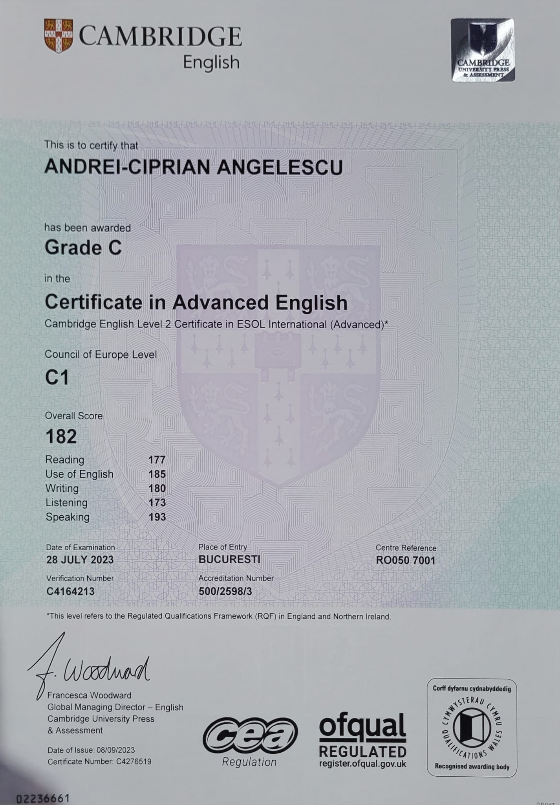

Student
Angelescu Andrei-Ciprian
"Omul să fie mulțumit cu sărăcia sa, căci, daca e vorba, nu bogăția, ci liniștea colibei tale te face fericit."
Social media
- https://www.instagram.com/ .............
- https://www.facebook.com/ .............
- https://www.linkedin.com/in/angelescu-ciprian-72681b204/ .............
Descriere personală
Sunt un tânăr absolvent de liceu, cu o pasiune puternică pentru tehnologie și sport. Am fost admis la Facultatea de Cibernetică, Statistică și Informatică Economică, specializarea Informatică Economică, unde intenționez să îmi dezvolt abilitățile în programare și analiza datelor. Îmi place să îmbin studiul cu activitatea fizică, fiind un pasionat de sporturi precum baschetul, fotbalul și fitness-ul. Sunt o persoană sociabilă, prietenoasă și ambițioasă, mereu deschisă să învăț lucruri noi și să colaborez cu cei din jur.
Activități extracurriculare:
- Sporturi practicate (baschet , fotbal , fitness)
- Citit
- Ingrijirea plantelor
Experiență:Voluntariat
Am fost implicat in diferite proiecte de voluntariat in timpul liceului.
- Club de robotica al liceului
- Concursul internațional ”Mathématiques sans frontières
- Atestat informatica in utilizarea limbajului html nivel avansat
Education
Colegiul National Vladimir Streinu
Matematica-Informatica
Septembrie 2016 - Iunie 2024
Academia de studii economice Bucuresti
Facultatea de Cibernetică, Statistică și Informatică Economică
Informatică Economică
30 septembrie 2024 -->2027
Certifications:
- Cambridge English First (FCE) : level C1: 
- Diploma bacalaureat fata:
- Diploma bacalaureat verso :